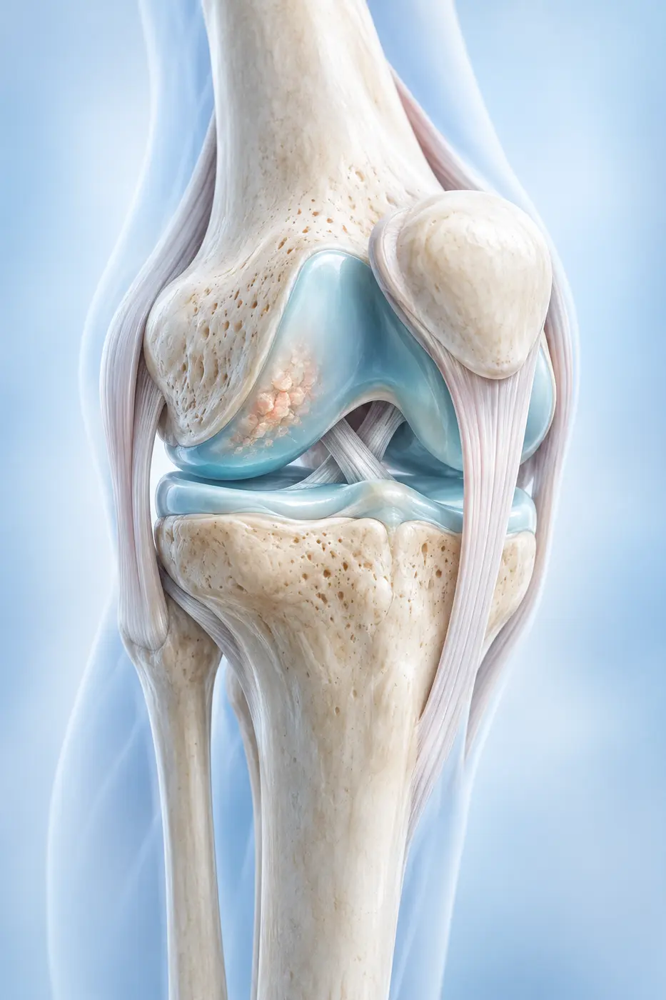

01
PERSONALIZED JOINT CARE
Feel better.
Feel better.
Move freely.
Live fully.
Thoughtful, non-surgical care for painful joints—built around your diagnosis, your lifestyle and your goals.
Compassionate care
Every visit starts by listening.
Years of experience
Clinical insight you can trust.
Non-surgical focus
Options tailored to you.
Clear next steps
Care without the confusion.

25+YEARS IN MEDICINE
ABOUT THE PRACTICE
Care that sees the whole person—not just the pain.
Dr. Cyrus Sedaghat brings clinical experience and a patient-first approach to each visit. Together, we build a clear plan that supports more comfortable movement and a more active life.
- Unhurried, focused evaluations
- Personalized non-surgical treatment plans
- Practical guidance for everyday movement
HOW WE HELP
Focused support for the joints that keep you moving.
Care is never one-size-fits-all. We begin with what is affecting your movement and create a plan around it.
02
03
04
YOUR VISIT, SIMPLIFIED
A clearer path forward starts here.
No rush, no guesswork—just a straightforward plan designed around you.
Tell us what has changed.
We learn how pain affects your work, movement and daily life.
Get a focused evaluation.
We look closely at what may be behind your symptoms and answer your questions.
Leave with a clear plan.
We outline practical next steps that fit your condition and your goals.
WHY PACIFIC PAIN
Expertise feels different when it comes with empathy.
Confidence comes from feeling informed, respected and supported at every stage of care.
Patient-centered decisions
Your concerns and your daily life help shape every recommendation.
Modern non-surgical options
Conservative care approaches designed around your diagnosis.
Guidance you can use
Plain-language answers, so you know exactly what comes next.
PATIENT EXPERIENCE
Care should leave you feeling heard.
Our goal is not simply to treat a joint—it is to give you the clarity and confidence to return to the moments that matter.
“The visit was thoughtful and never rushed. I understood my options and knew exactly what the next step would be.”
JP
Jared P.Pacific Pain Clinic patient
CONTACT US TODAY
Let’s make your next step a confident one.
Call our Irvine office or send a message to request a consultation. Our team will help you find a time that works.
- (714) 500-8388
- Irvine, California
- Monday–Friday · By appointment